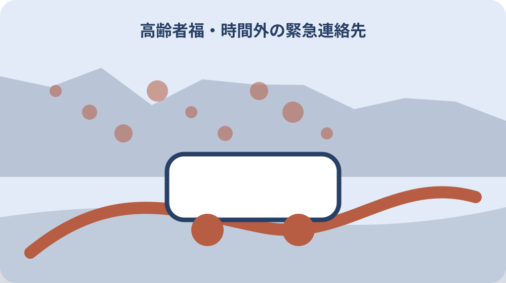

先に結論を確認する
家族が利用候補を条件別に整理したい場合は、まず資料の名称、対象、基準日をそろえます。確認の起点は「森町地域包括支援センター」です。個別条件は、資料の本文と担当窓口で確かめてください。
この記事では、公表済みの事実と、個別に確認する条件を分けて扱います。数値や制度名だけを抜き出さず、いつ・誰に・どこで当てはまる情報かまで記録します。
この問いで最初に決めること
森町地域包括支援センターは森町が設置・運営する高齢者の総合相談窓口である。
高齢者短期入所事業は原則1回7日以内、年2回まで利用できる。
最初に決めるのは、この記事で確かめた情報を何の判断に使うかです。数字、書類、区域、対象者など、答えの単位を一つに絞ると、似た案内を混ぜずに済みます。「在宅福祉サービスを探す入口」の答えを、数値、対象者、場所、時期、手続きのどれとして残すのかを決めます。答えの形が決まれば、不要な資料を減らせます。
確認表の一行目には本人の年齢・状態、家族状況、希望する支援を書きます。未定の項目には確認先と確認日を置き、空欄のまま結論へ進まないようにします。似た名称の制度や統計があるときは、正式名称をそのままメモします。略称だけで保存すると、後で別の資料と取り違えるおそれがあります。この区別は「時間外の緊急連絡先」を整理するときにも使います。
この段階では、できる・できないを決める必要はありません。まず確定した事実、条件付きで使える情報、まだ分からない点の三つに分けます。今回の判断に使わない情報も、誤りとして捨てるのではなく、対象外になった理由を残します。別の時期や家族には必要になる場合があります。この整理ができれば、次に開く資料と尋ねる相手を一つに絞れます。確認結果は「設置費と賃借料の負担区分」の記録へ反映します。
どのサービスが使えるか分からない場合、どこへ相談しますか。森町地域包括支援センターへ相談できます。高齢者本人、家族、地域住民からの相談に対応します。
一次情報から確定できる範囲
地域包括支援センターは、高齢者本人だけでなく家族や地域住民からの相談も受け付ける。
森町の在宅福祉サービスには、食生活を支援する配食に関する事業も掲載されている。
一次情報から確定できる範囲を見極めます。見出しだけで判断せず、対象となる人や場所、基準日、単位、注記まで確認します。「地域包括支援センターの役割」は、森町の掲載ページと担当部署を確認してから読みます。転載された制度名だけで対象を判断しません。
確認の起点は森町地域包括支援センターと保健福祉課です。公開日と適用日が同じとは限らないため、引用や申請に使う日付を別に控えます。年齢、世帯状況、心身の状態、利用回数、費用を別の項目として読みます。いずれか一つだけで対象を決めないでください。この区別は「治療費助成の年齢要件」を整理するときにも使います。
別の資料と数値や条件が違うときは、新しい方へ機械的に寄せません。定義、集計方法、対象期間が同じかを先に比べます。掲載資料が説明していない本人の可否は推測せず、相談時に確認する項目として残します。確定できた範囲が狭くても、資料が保証している範囲を正しく残す方が安全です。確認結果は「救急医療情報キットの配布」の記録へ反映します。
森町で当てはめる条件：本人の年齢だけでなく、ひとり暮らし・高齢者のみ世帯・身体状況など各事業固有の要件を確認する。
森町で条件が変わるポイント
地域包括支援センターは、介護支援専門員からの相談にも対応する。
介護保険サービスと市町村の高齢者福祉事業は別制度であり、厚生労働省は介護保険制度の全体像を案内している。
森町の福祉サービスを本人へ当てはめるときは、年齢、心身の状態、世帯状況、現在受けている支援を分けて確認します。「本人・家族・地域からの相談」を本人へ当てはめるときは、現在の生活状況と希望する支援を具体的にします。
サービス名が似ていても、対象条件や相談窓口は同じとは限りません。本人の希望を置き去りにせず、家族の負担だけで選ばないようにします。町全体の制度説明と、本人に利用が認められることは同じではありません。相談先の確認を経て判断します。この区別は「助成券の金額と枚数」を整理するときにも使います。
緊急性がある場合は、通常の情報整理より安全確保と専門窓口への連絡を優先します。この記事だけで利用可否を判断しないでください。本人の状態が変わった場合は、以前の相談結果をそのまま使わず、変化した点を伝えて再確認します。個別条件を確認した結果は、町全体の説明と混ぜずに対象ごとの記録へ戻します。確認結果は「短期宿泊の回数と日数」の記録へ反映します。

資料を集める順番
森町地域包括支援センターの所在地は森町森50番地の1である。
資料は、知りたいことに直接答えるものから集めます。関連しそうな資料を先に増やすより、主資料、補足資料、個別確認の順に並べる方が読み違いを防げます。「平日の受付時間と電話番号」に使う資料は、確認した順ではなく役割順に並べます。結論の根拠、条件の補足、個別照会の回答が分かる構成にします。
PDFや表を保存するときは、資料名、ページ番号、確認日をファイル名かメモへ残します。数字だけを転記すると、後から単位や注記を確かめられません。表計算へ転記する場合も、元資料のURLと該当箇所を同じ行へ残します。転記値だけでは、更新時の差分を確かめられません。この区別は「緊急通報システムの対象者」を整理するときにも使います。
必要書類がある場合は、原本か写しか、発行期限があるか、本人以外でも取得できるかを分けて確認します。取得前に用途を伝えると手戻りを減らせます。資料の版が複数あるときは、最新版だけでなく、今回の基準日に対応する版を選びます。最新版が過去時点の説明に適するとは限りません。集めた資料ごとに役割を一行で書けば、後から不要な重複を整理できます。確認結果は「相談時に伝える生活状況」の記録へ反映します。
地域包括支援センターの受付時間はいつですか。平日の午前8時30分から午後5時15分です。時間外の緊急連絡は森町役場代表0538-85-2111です。
現地または窓口で確認すること
森町地域包括支援センターの電話番号は0538-85-6341である。
相談前に、本人の状態、困っている場面、希望する支援、家族が対応できる範囲を短くまとめます。病名だけでは生活上の困りごとが伝わりません。「時間外の緊急連絡先」の問い合わせでは、質問を一度に広げすぎません。まず主題に直接関係する一点を確認し、回答に応じて次の質問へ進みます。
地域包括支援センターへ相談した内容は、次の担当や必要資料と一緒に記録します。制度名を聞いただけで利用できると決めないでください。電話で確認した場合は、部署名、確認日時、回答の要点を残します。担当者個人の名前を必要以上に共有せず、公式の連絡先を記録します。この区別は「設置費と賃借料の負担区分」を整理するときにも使います。
医療判断や介護認定が関係する内容は、町の案内と医療・介護の専門判断を分けます。本人の同意と個人情報の扱いにも配慮します。法務、税務、医療、構造、安全性など専門判断が必要な内容は、担当部署の案内だけで結論を出さず、必要な資格者や所管機関へつなぎます。回答を受けた後は、当初の質問に答えられたかを確認し、別の論点を同じ回答へ混ぜません。確認結果は「在宅福祉サービスを探す入口」の記録へ反映します。
期限と実行日の組み立て方
通常の相談受付は平日の午前8時30分から午後5時15分までである。
日付は、相談日、申込日、利用開始日、見直し日を分けます。本人の状態が変わった場合は、予定日を待たずに相談し直します。「治療費助成の年齢要件」は、相談日、申込日、利用開始日、見直し日を並べて管理します。
年度をまたぐ案内は、対象条件、利用回数、費用、受付方法の変更を確認します。前年の利用経験だけで当年の条件を決めないでください。受付期間や利用回数が示されている場合は、いつから数えるのかを確認します。家族の都合だけで起算日を決めません。この区別は「救急医療情報キットの配布」を整理するときにも使います。
家族や事業者からの回答待ちがある場合は、次に連絡する日を決めます。支援が途切れないよう、緊急時の相談先も確認します。次の相談日を決め、本人の状態や家族状況に変化があれば予定日前でも連絡します。時系列の最後には次の確認日を置き、更新情報を追う担当も決めておきます。確認結果は「地域包括支援センターの役割」の記録へ反映します。
森町で当てはめる条件：助成額、利用回数、自己負担の有無を事業ごとに分けて確認する。
費用と見えにくい負担
受付時間外の緊急連絡は森町役場代表0538-85-2111で受け付ける。
福祉サービスの負担は、利用料だけでなく、送迎、見守り、申請、家族の時間、利用開始までの待機も含めて考えます。「助成券の金額と枚数」の負担を見積もるときは、調査を担当する人の時間も含めます。無料の資料でも、探し直しや移動には負担が生じます。
家族が遠方にいる場合は、日常の連絡役、緊急時の連絡先、手続きの担当を分けます。一人で抱え続ける前提にしないことが重要です。家族が遠方にいる場合は、郵送、オンライン共有、現地確認の担当を分けます。一人がすべて抱える前提にしないことが継続の条件です。この区別は「短期宿泊の回数と日数」を整理するときにも使います。
希望する支援が対象外の場合は、代替サービスや別の相談先を確認します。対象外と支援不要を同じ意味にしないでください。費用や手間が予想より増えたときに、どこで中止・保留するかを先に決めます。続けることだけを前提にすると、判断を急ぎやすくなります。負担が大きいと分かった場合は、確認範囲を狭めることも現実的な選択です。確認結果は「本人・家族・地域からの相談」の記録へ反映します。
70歳なら治療費助成を受けられますか。当該年度の4月1日時点で70歳以上が年齢要件です。ほかの条件と申請方法も窓口で確認してください。
家族・関係者との共有
はり・きゅう・マッサージ治療費助成は、当該年度の4月1日時点で70歳以上の人を対象とする。
家族や関係者へは、結論だけを送らず、根拠にした資料と確認日を添えます。前提が変われば答えも変わることを共有します。「緊急通報システムの対象者」を共有するときは、要約と元資料を分けます。要約には作成者と日付を付け、解釈が含まれることが分かるようにします。
情報を集める人と決定する人が異なる場合は、誰がどこまで確認したかを残します。一人の記憶だけに頼らない形にしてください。個人情報や権利関係を含む資料は、家族全員へ一律に送らず、必要な人だけが見られる場所で管理します。共有リンクの期限も確認します。この区別は「相談時に伝える生活状況」を整理するときにも使います。
意見が分かれたときは、賛否より先に、確定事実、希望、負担、保留条件を並べます。何が分かれば次へ進めるかを決める方が話し合いやすくなります。家族から別の情報が出た場合は、どちらが正しいかをその場で決めず、出典と基準日を確認します。新しい情報も同じ確認表へ追加します。共有後に認識が一致したかを確かめ、異なる理解は確認表の注記として残します。確認結果は「平日の受付時間と電話番号」の記録へ反映します。
判断を急がないための代案
はり・きゅう・マッサージ治療費助成は、1枚1,000円の助成券を年度内5枚交付する。
判断案は、情報を採用する案だけでなく、条件が整うまで待つ案と、今回は使わない案も残します。選択肢を二つに絞りすぎないでください。「設置費と賃借料の負担区分」の代案は、目的を変えずに方法を変える案と、目的自体を見直す案に分けます。何を守りたいかが分かると比較しやすくなります。
最初の行動は、資料を一件確認する、窓口を特定する、対象を記すなど、小さく区切れます。大きな手続きや判断を最初の一歩にする必要はありません。公式資料だけで決められない場合は、窓口確認、専門相談、現地確認のどれを先に行うかを選びます。すべてを同時に始める必要はありません。この区別は「在宅福祉サービスを探す入口」を整理するときにも使います。
保留にするときは、理由と再確認日を記録します。情報不足で止まっているのか、条件が合わないと判断したのかを分けておけば、再開しやすくなります。見送る案にも、再検討する条件を付けます。制度の更新、家族状況の変化、資料の入手など、再開のきっかけを具体的にします。代案にも根拠資料を付け、単なる思いつきではなく比較できる選択肢にします。確認結果は「時間外の緊急連絡先」の記録へ反映します。
森町で当てはめる条件：緊急時と通常相談で電話番号・受付時間が異なるため、連絡先を使い分ける。
記録を次の人へ残す
緊急通報システムは、65歳以上のひとり暮らし高齢者や高齢者のみの世帯などを対象とする。
記録には、確認者、確認日、資料名、分かったこと、残った疑問、次の担当を残します。結論だけでは、前提が変わったときに見直しができません。「救急医療情報キットの配布」の記録は、第三者が読んでも確認経路をたどれることが目標です。自分だけに通じる略称や評価語は避けます。
住所と地番、通称と正式名称、年度と暦年など、似ていて役割の違う情報は欄を分けます。元資料の表記は書き換えずに保存します。回答を要約するときは、事実と自分の判断を別の欄に書きます。担当機関の説明を、自分の結論として言い換えないようにしてください。この区別は「地域包括支援センターの役割」を整理するときにも使います。
更新版を入手したら、古い版を黙って上書きしません。何が変わったかを短く残し、個人情報を含む資料は共有範囲も確認します。記録を終える前に、元資料へ戻れるリンクが開くか確認します。リンク切れに備え、資料名と担当部署も文字で残します。最後に未確認事項だけを一覧にし、次の担当がそのまま動ける状態へ整えます。確認結果は「治療費助成の年齢要件」の記録へ反映します。
緊急通報システムは無料ですか。設置費と撤去費は町の助成対象ですが、機器の賃借料は利用者負担です。
「森町地域包括支援センター」は、中心となる一次資料です。本文で使う箇所の見出し、対象年度、確認日を一緒に控えます。
大石の視点
緊急通報システムの設置費と撤去費は町が助成し、機器の賃借料は利用者負担である。
大石の視点では、本人の年齢・状態、家族状況、希望する支援を分けます。住まいの判断を先に決めず、暮らしを続ける条件から整理します。「短期宿泊の回数と日数」では、公表事実と私の意見を明確に分けます。意見は判断の順序を提案するもので、個別の可否を保証するものではありません。
私は、本人や家族から聞いていない事情を経験談のように補いません。分からない点は、地域包括支援センターへ相談する項目として残します。小さな不動産業者としては、本人の年齢・状態、家族状況、希望する支援を一度に結論へ結び付けず、資料で確かめられる範囲から順番に整理することを勧めます。この区別は「本人・家族・地域からの相談」を整理するときにも使います。
まだ住まいや資産の扱いを決めていない段階でも、支援の記録は役立ちます。本人が選べる情報量と順序を整えることを優先します。相談者がまだ決めていない状態を尊重し、情報を採用する案、追加確認する案、保留する案、使わない案を同じ表で比べます。結論を迫ることを相談の目的にしません。私は、資料で確認できたことより先へ結論を広げない姿勢を大切にします。確認結果は「助成券の金額と枚数」の記録へ反映します。
「高齢者在宅福祉サービス」は、中心となる一次資料です。本文で使う箇所の見出し、対象年度、確認日を一緒に控えます。
まとめと次の一歩
救急医療情報キットは、要件を満たす75歳以上のひとり暮らし高齢者や高齢者のみの世帯などへ無料で配布する。
最後に、本人の希望とサービスの対象条件が資料で確認できているかを見直します。未確認なら利用できると断定しません。「相談時に伝える生活状況」を確認したら、主資料一件、補足資料一件、未確認事項一件を声に出して説明してみます。説明できない部分が次の確認対象です。
今日できる一歩は、本人の状態と困っている場面をまとめ、地域包括支援センターへ相談することです。まとめには、分かったことだけでなく、今回の資料では分からなかったことも残します。情報がないことと、対象外であることを混同しないでください。この区別は「平日の受付時間と電話番号」を整理するときにも使います。
利用開始前には、対象条件、費用、連絡先、家族の担当を再確認します。状態が変わったときの連絡方法も共有してください。最後の確認日を記したら、次に見直す時期も決めます。更新が多い情報は実行直前、変わりにくい資料は前提が変わったときに確認します。ここまでの記録を一枚にまとめれば、次の確認で最初から調べ直す必要がありません。確認結果は「緊急通報システムの対象者」の記録へ反映します。
「厚生労働省 介護・高齢者福祉」は、国や所管機関の補足資料です。本文で使う箇所の見出し、対象年度、確認日を一緒に控えます。